|
|
| hard corals text index | photo index |
| Phylum Cnidaria > Class Anthozoa > Subclass Zoantharia/Hexacorallia > Order Scleractinia > Family Agariciidae |
| Lettuce
coral Pavona sp.* Family Agariciidae updated Nov 2019 Where seen? This leafy lettuce-like hard coral is sometimes seen on some of our Southern shores. Features: Colonies may be small (10-15cm), generally forming a rounded shape with a compact leafy structure that gives them their common name. Some colonies may be much larger (30-40cm) with broader flat blades forming more open shapes that resemble propeller blades. The corallites are found in shallow depressions. Sometimes separated by ridges that result in a distrinctive, fine, intricate pattern of short lines on the surface of the coral. The skeleton is not covered in thick tissue. The tiny polyps appear on both sides of the leaf-like blades. The tentacles are spindly and pointed. When extended at night, the tentacles give the colony a prickly appearance. Long sweeper tentacles may be produced. Colours seen include brown, blue sometimes with tinges of other colours. |
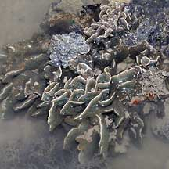 Pulau Hantu, Apr 06 |
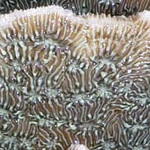 |
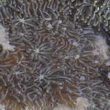 |
| Living among lettuce: The leafy
structures are perfect hiding places for fishes. Fan
worms and tiny
clams are sometimes also seen living among the 'leaves'. Status and threats: The IUCN global listing for the species recorded Pavona cactus and Pavona decussata as Vulnerable. |
*Species are difficult to positively identify without close examination.
On this website, they are grouped by external features for convenience of display.
| Lettuce corals on Singapore shores |
On wildsingapore
flickr
|
| Other sightings on Singapore shores |
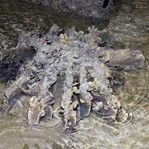 Sisters Island, Jun 07 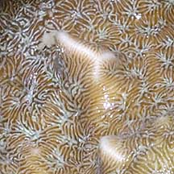 |
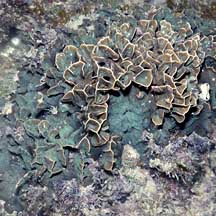 Sisters Island, Jul 04 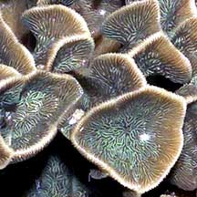 |
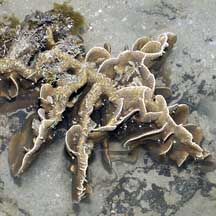 Pulau Hantu, Apr 06 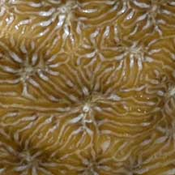 |
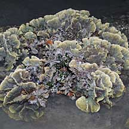 Pulau Hantu, Jan 10 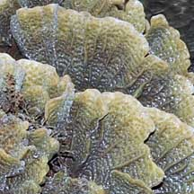 |
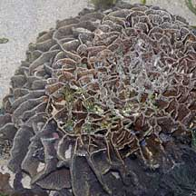 Terumbu Pempang Laut, Aug 10 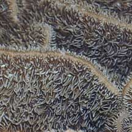 |
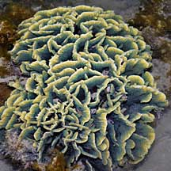 Terumbu Raya, Feb 09 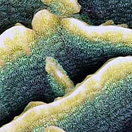 |
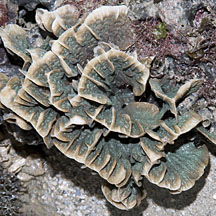 Terumbu Semakau, May 12 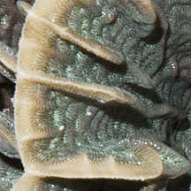 |
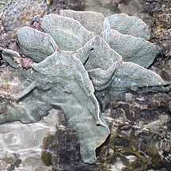 Terumbu Bemban, Jul 11 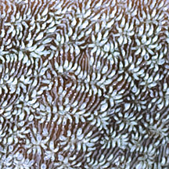 |
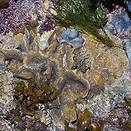 Raffles Lighthouse, May 04 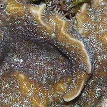 |
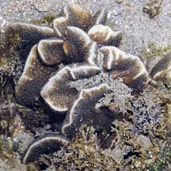 Pulau Berkas, May 10 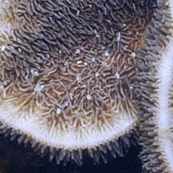 |
| Pavona
species recorded for Singapore from Danwei Huang, Karenne P. P. Tun, L. M Chou and Peter A. Todd. 30 Dec 2009. An inventory of zooxanthellate sclerectinian corals in Singapore including 33 new records **the species found on many shores in Danwei's paper. *Groups based on in Veron, Jen. 2000. Corals of the World. in red are those listed as threatened on the IUCN global list.
|
|
Links
|